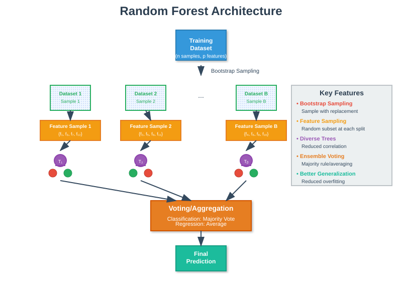
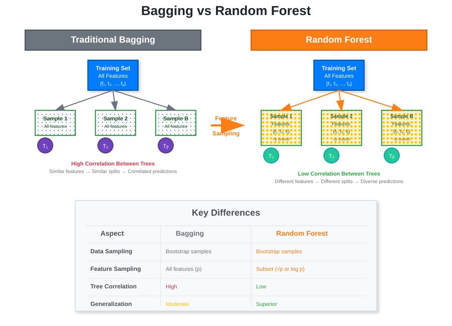
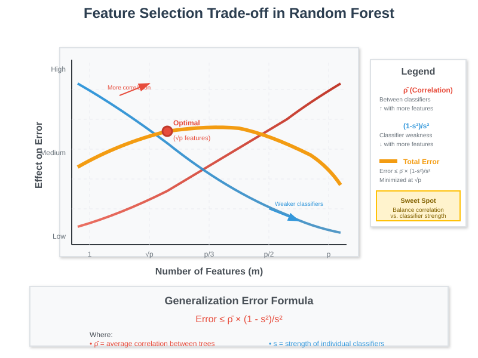
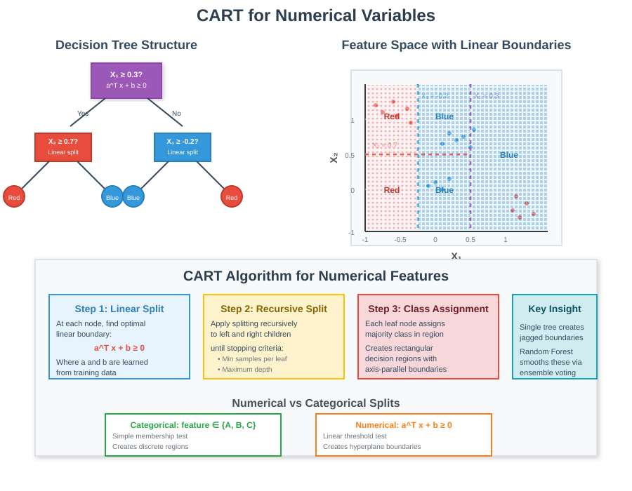
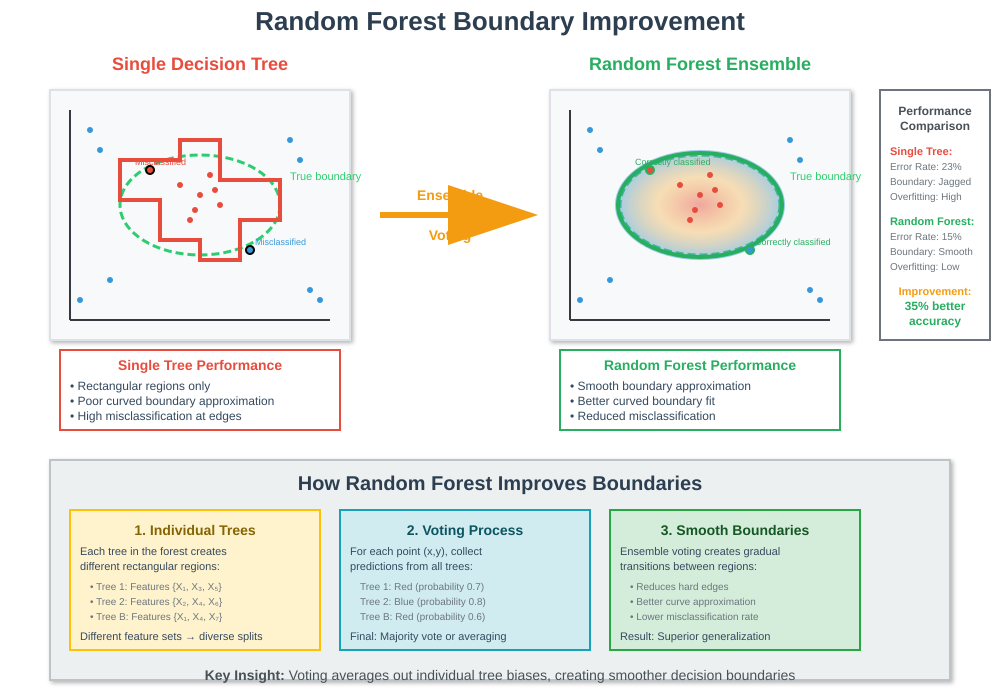

Random Forest and CART: Advanced Ensemble Methods
🧭 Quick Navigation
- Introduction
- Random Forest Fundamentals
- Random Forest vs Bagging
- Feature Sampling and Diversity
- Generalization Error Analysis
- CART for Numerical Variables
- Practical Implementation
- Performance Comparison
- References & Further Reading
Introduction
Random Forest represents a significant advancement over traditional bagging methods by introducing feature sampling alongside data sampling. This ensemble method addresses the fundamental limitation of bagging where bootstrapped samples may be highly correlated, leading to correlated decision trees that don't effectively reduce prediction error.
The key innovation lies in creating two sources of variability: 1. Data sampling (bootstrap sampling) 2. Feature sampling (random feature selection)

Trade-off Summary: While Random Forest sacrifices interpretability compared to single decision trees, it achieves superior generalization performance through increased model diversity.
Random Forest Fundamentals
Core Concept
Random Forest extends bagging by sampling both data points and features at each node, creating more diverse decision trees that are less correlated with each other.
Key Components
Bootstrap Sampling: - Create multiple datasets through sampling with replacement - Each dataset maintains original size but with different compositions
Feature Sampling: - Randomly select subset of features for each tree - Typical choice: √p features where p is total feature count - Applied at each node during tree construction
Aggregation: - Classification: Majority voting - Regression: Average prediction - Tie-breaking: Random selection (rare occurrence)
Algorithm Steps
For each tree i = 1 to B:
1. Sample n observations with replacement → Bootstrap dataset Di
2. For each node in tree i:
a. Sample m features from total p features
b. Find best split using only these m features
c. Split node using best feature/threshold
3. Grow tree to completion (or stopping criteria)
4. Store tree Ti
Final Prediction:
- Classification: majority_vote(T1, T2, ..., TB)
- Regression: average(T1, T2, ..., TB)
Random Forest vs Bagging
The fundamental difference between Random Forest and traditional bagging lies in the feature selection process.

Bagging Limitations
Correlation Problem: - Bootstrap samples may be highly similar - Trees become correlated - Reduced effectiveness of averaging
Mathematical Issue:
If trees are highly correlated (ρ ≈ 1), the variance reduction from averaging becomes minimal:
Var(average) = (1/B²) × [B × σ² + B(B-1) × ρσ²]
= σ²/B + ρσ²(B-1)/B
≈ ρσ² when B is large
Random Forest Solution
Decorrelation Strategy: - Feature sampling reduces correlation between trees - Different features → different split decisions → diverse trees - Enhanced variance reduction through averaging
Increased Diversity: - Each tree sees different feature subsets - Forces trees to consider alternative splitting criteria - Creates ensemble of complementary models
Feature Sampling and Diversity
Enhanced Diversification
Random Forest can further increase diversity through per-node feature sampling:
- Standard Approach: Sample features once per tree
- Enhanced Approach: Sample features at every node
Advanced Sampling Strategy
For each internal node:
1. Sample m features from available features
2. Find best split among these m features
3. Apply split and recurse
4. Repeat with new feature sample for child nodes
Benefits: - Maximum diversity between trees - Reduced overfitting - Better generalization
Drawbacks: - Increased computational complexity - Further reduced interpretability - Approaching "black box" behavior

Generalization Error Analysis
Error Decomposition
The generalization error of Random Forest depends on two key factors:
Error ≤ ρ̄ × (1 - s²)/s²
Where: - ρ̄: Average correlation between classifiers - s: Strength of individual classifiers (1 - error rate)
Component Analysis
Correlation Term (ρ̄): - Increases with more features per tree - Decreases with fewer features per tree - Minimum when using 1 feature per tree
Strength Term (s): - Increases with more features per tree - Decreases with fewer features per tree - Maximum when using all features
Optimal Feature Selection
The optimal number of features (m) balances these competing objectives:
Too Few Features (m → 1): - Low correlation (ρ̄ → 0) - Weak individual classifiers (s → 0) - High (1-s²)/s² term
Too Many Features (m → p): - Strong individual classifiers (s → 1) - High correlation (ρ̄ → 1) - High ρ̄ term
Optimal Choice: - Typically m = √p for classification - Typically m = p/3 for regression - Found through cross-validation
CART for Numerical Variables
Numerical Feature Handling
When features are continuous numerical variables, CART (Classification and Regression Trees) uses linear decision boundaries at each node.

Decision Rule Format
Instead of categorical splits:
if feature_value ∈ {category1, category2}:
go_left()
else:
go_right()
CART uses linear thresholds:
if a^T × x + b ≥ 0:
go_left()
else:
go_right()
Boundary Approximation
Single Tree Limitations: - Creates rectangular decision regions - Poor approximation of curved boundaries - Susceptible to overfitting with complex boundaries
Random Forest Improvement: - Voting smooths rectangular boundaries - Better approximation of complex shapes - Reduced misclassification in boundary regions
Example: Elliptical Boundary
Consider separating two classes with an elliptical decision boundary:
Single CART Tree: - Uses axis-parallel splits only - Creates jagged rectangular approximation - High misclassification at boundary
Random Forest: - Multiple trees with different orientations - Voting creates smoother boundary approximation - Significant reduction in boundary errors

Practical Implementation
Hyperparameter Tuning
| Parameter | Description | Typical Range | Tuning Strategy |
|---|---|---|---|
n_estimators |
Number of trees | 100-1000 | Start with 100, increase until performance plateaus |
max_features |
Features per split | √p, log₂(p), p/3 | Cross-validation on |
max_depth |
Maximum tree depth | None, 10-30 | Balance between bias and variance |
min_samples_split |
Minimum samples to split | 2-20 | Prevent overfitting on small datasets |
min_samples_leaf |
Minimum samples per leaf | 1-10 | Control tree granularity |
Feature Importance
Random Forest provides built-in feature importance measures:
Mean Decrease Impurity (MDI):
Importance(Xi) = Σ(trees) Σ(nodes) P(node) × Δimpurity(node, Xi)
Mean Decrease Accuracy (MDA):
Importance(Xi) = Accuracy(original) - Accuracy(permuted_Xi)
Out-of-Bag (OOB) Evaluation
Concept: - Each tree trained on ~63% of data (bootstrap sample) - Remaining ~37% used for validation - No need for separate validation set
OOB Error Calculation:
For each observation xi:
1. Collect predictions from trees where xi was OOB
2. Compute ensemble prediction
3. Compare with true label yi
OOB_Error = (1/n) × Σ(i=1 to n) I(ŷi_oob ≠ yi)
Performance Comparison
Titanic Dataset Example
The document illustrates Random Forest performance on the Titanic dataset:
Single Decision Tree: - Training error decreases with depth - Validation error increases after depth 4 - Clear overfitting beyond optimal depth
Random Forest (25 estimators): - Both training and validation errors improve - Performance continues improving to depth 6 - Better bias-variance trade-off
Performance Metrics
| Method | Training Error | Validation Error | Overfitting |
|---|---|---|---|
| Single Tree (depth 6) | 0.15 | 0.23 | High |
| Random Forest (depth 6) | 0.14 | 0.19 | Low |
Advantages
Generalization: - Reduced overfitting through averaging - Better performance on unseen data - More stable predictions
Robustness: - Less sensitive to outliers - Handles missing values naturally - Works with mixed data types
Scalability: - Naturally parallelizable - Efficient on large datasets - Good performance without extensive tuning
Limitations
Interpretability: - Loss of single tree interpretability - Complex feature interactions - Difficult to explain individual predictions
Memory Usage: - Stores multiple trees - Higher memory requirements - Potential scalability issues with very large ensembles
Computational Cost: - Training time increases linearly with trees - Prediction time increases with ensemble size - More complex than single tree models
References & Further Reading
📚 Foundational Papers
- Breiman, L. (2001) - "Random Forests" - Machine Learning
- Breiman, L. (1996) - "Bagging Predictors" - Machine Learning
🔬 Advanced Research
- Geurts, P. et al. (2006) - "Extremely Randomized Trees" - Machine Learning
- Louppe, G. (2014) - "Understanding Random Forests: From Theory to Practice" - arXiv
💻 Implementation Resources
- Scikit-learn Random Forest - Complete implementation guide
- XGBoost Documentation - Advanced ensemble methods
🎓 Educational Materials
- An Introduction to Statistical Learning - Chapter 8: Tree-Based Methods
- Elements of Statistical Learning - Chapter 15: Random Forests
🚀 Colab Notebooks
 Random Forest Classification Example
Random Forest Classification Example
 Feature Importance Analysis
Feature Importance Analysis